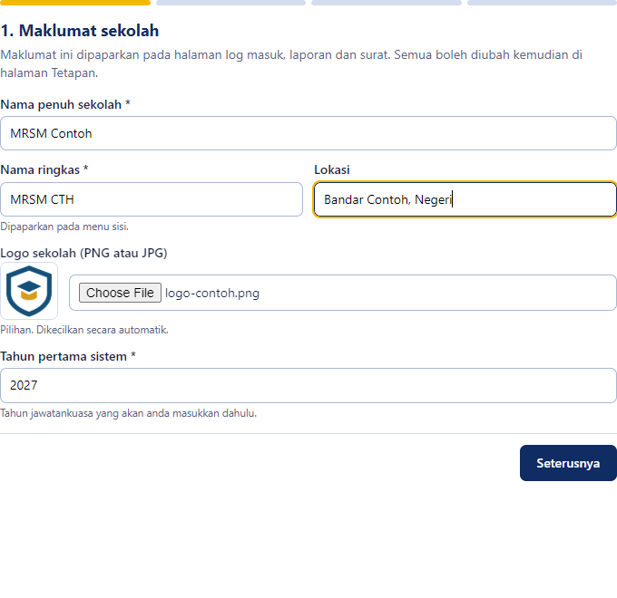
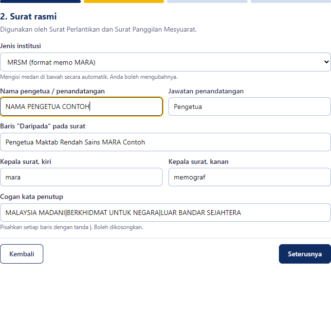
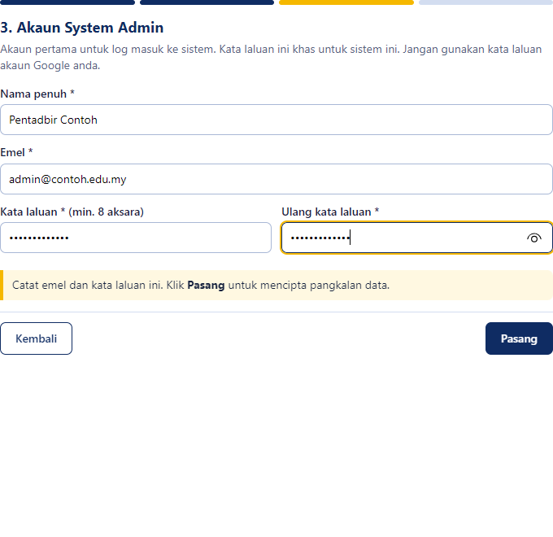
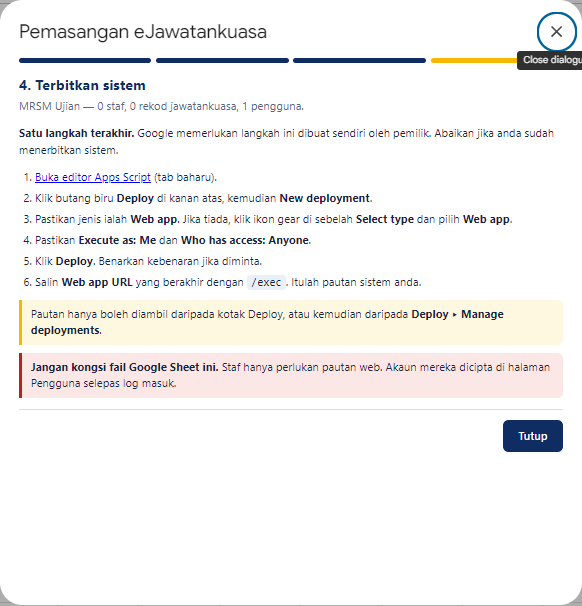
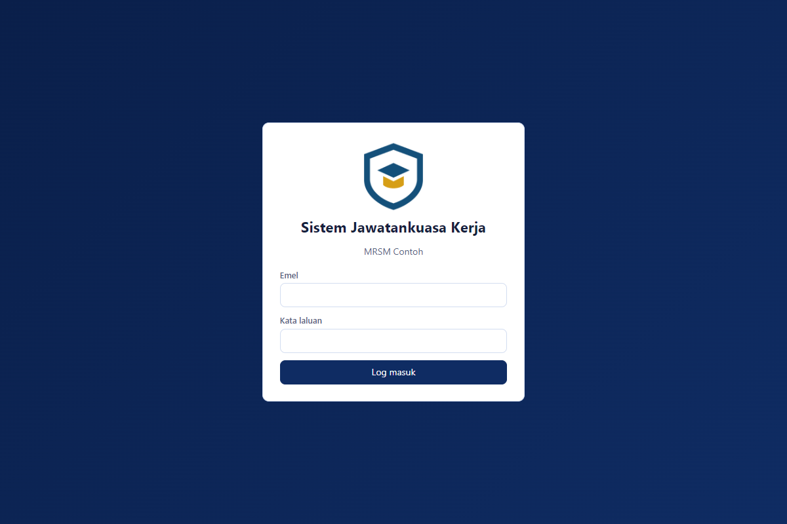
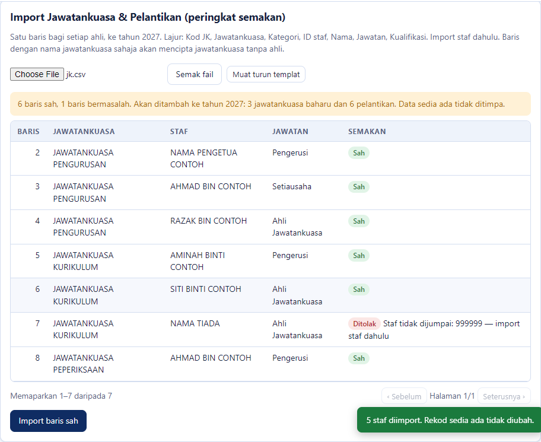

Sistem pengurusan jawatankuasa, pelantikan staf dan analisis beban kerja untuk MRSM dan sekolah
Dibangunkan oleh MRSM Sultan Azlan Shah · Versi 1.3 · November 2026
Setiap maktab memasang salinan sendiri menggunakan fail dalam pakej ini. Data anda disimpan dalam Google Drive akaun anda dan tidak boleh dilihat oleh maktab lain atau pembangun sistem.
4-Logo.3-Templat-Data.| Peranan | Kebenaran |
|---|---|
| System Admin | Semua: staf, jawatan dan merit, tetapan, pengguna, peralihan tahun, import, log audit. |
| Editor | Urus jawatankuasa dan pelantikan, muat naik dan sunting Takwim Sekolah, lihat laporan, jana surat. |
| Viewer | Baca sahaja, termasuk Takwim Sekolah. Emel, telefon dan catatan staf disembunyikan. |
Semua fail untuk langkah ini berada dalam folder 2-Kod-Sistem. Anda hanya menyalin dan menampal; tiada kod perlu diubah.
eJawatankuasa, kemudian klik Rename.Bagi setiap fail: dalam folder pakej, klik kanan fail ▸ Open with ▸ Notepad, tekan Ctrl+A dan Ctrl+C. Dalam editor Apps Script, klik pada kandungan fail sasaran, tekan Ctrl+A dan Ctrl+V supaya kandungan lama diganti.
| No. | Fail dalam pakej | Tampal ke dalam |
|---|---|---|
| 1 | appsscript.json | appsscript.json yang sudah ada dalam senarai fail. |
| 2 | Code.gs | Code.gs yang sudah ada dalam senarai fail. |
| 3 | Index.html | Fail baharu: klik + di sebelah Files ▸ HTML, taip Index, tekan Enter. |
| 4 | Pemasang.html | Fail baharu: klik + di sebelah Files ▸ HTML, taip Pemasang, tekan Enter. |
Klik ikon Save project (atau tekan Ctrl+S) dan pastikan tiada lagi tanda titik oren pada nama fail. Simpan dahulu sebelum kembali ke Google Sheet, kerana tab Apps Script tertutup sendiri apabila Sheet dimuat semula.
appsscript.json, Code.gs, Index.html dan Pemasang.html. Nama mesti sama, termasuk huruf besar. Baris terakhir Code.gs, Index.html dan Pemasang.html mesti mengandungi perkataan TAMAT FAIL. Jika tiada, fail tidak habis ditampal.Borang empat langkah dibuka dalam Google Sheet. Semua maklumat sekolah boleh diubah kemudian di halaman Tetapan.

Rajah 1: Maklumat sekolah, logo dan tahun pertama

Rajah 2: Butiran surat rasmi
| Medan | Panduan |
|---|---|
| Nama penuh sekolah | Dipaparkan pada log masuk, laporan dan surat. |
| Tahun pertama sistem | Tahun jawatankuasa yang akan dimasukkan dahulu. Tahun seterusnya dicipta melalui Peralihan Tahun. |
| Jenis institusi | MRSM mengisi format memo MARA. Sekolah lain menggunakan nama sekolah sebagai kepala surat. Semak dan ubah jika perlu. |
| Cogan kata penutup | Pisahkan setiap baris dengan tanda |. Kosongkan jika tidak perlu. |
| Akaun System Admin | Emel dan kata laluan untuk log masuk ke sistem. Gunakan kata laluan baharu, bukan kata laluan Google. Sekurang-kurangnya 8 aksara. |

Rajah 3: Akaun System Admin. Klik Pasang dan tunggu kira-kira 30 saat.

Rajah 4: Selepas dipasang, borang memaparkan arahan penerbitan
Langkah ini mesti dibuat sendiri oleh pemilik kerana Google tidak membenarkan skrip menerbitkan dirinya.
| Execute as | Me (akaun anda) |
| Who has access | Anyone |
/exec. Inilah pautan sistem anda. Bukanya untuk menguji, kemudian simpan untuk dikongsi dengan staf.
Rajah 5: Halaman log masuk memaparkan nama dan logo sekolah anda
Log masuk sebagai System Admin. Jika pelayar anda sudah log masuk ke akaun Google pemilik dan emel System Admin sama dengan akaun itu, sistem terus memaparkan Papan Pemuka tanpa meminta kata laluan. Papan Pemuka memaparkan panduan sehingga data lengkap. Pergi ke Import / Eksport.
Gunakan templat-import-staf.csv dalam folder 3-Templat-Data, atau klik Muat turun templat dalam sistem. Isi dalam Excel, simpan sebagai CSV UTF-8, pilih fail, klik Semak fail, kemudian Import.
| Lajur | Keterangan |
|---|---|
staffId | Wajib dan unik. Gunakan No. Gaji atau kod unik. |
nama | Wajib. Nama penuh. |
jawatan, emel, telefon, jabatan | Pilihan. |
kategori | GURU atau SOKONGAN dikira dalam analisis beban. EXOFFICIO (mis. Pengetua) direkodkan tetapi diasingkan daripada analisis. |
Pilih tahun yang betul di bahagian atas skrin. Sediakan satu baris bagi setiap ahli. Jawatankuasa baharu dicipta secara automatik.
| Lajur | Keterangan |
|---|---|
Kod JK, Kategori | Pilihan tetapi disyorkan. Laporan disusun mengikut kod dan kategori (mis. A01, Pentadbiran). |
Jawatankuasa | Wajib. Nama jawatankuasa. Gunakan ejaan yang sama bagi semua ahli. |
ID staf atau Nama | Sekurang-kurangnya satu. ID staf lebih tepat. |
Jawatan | Mesti wujud dalam senarai Jawatan & Merit, mis. Pengerusi, Setiausaha, Ahli. |
Kualifikasi | Pilihan. Membezakan pemegang jawatan yang sama, mis. I, II. |

Rajah 6: Sistem menyemak setiap baris sebelum menyimpan. Baris bermasalah ditolak dengan sebab yang jelas; data sedia ada tidak ditimpa.
Modul 📅 Takwim Sekolah memaparkan takwim tahunan maktab kepada semua pengguna. Takwim dimuat naik oleh System Admin atau Editor daripada fail Excel takwim sedia ada; tiada persediaan tambahan diperlukan semasa pemasangan.
.xlsx. Format yang dibaca: lajur pertama nama hari (Isnin hingga Ahad), baris tajuk dengan nama bulan, 2 lajur bagi setiap bulan (tarikh dan acara, dengan 1 menandakan hari persekolahan), dan petunjuk warna (legend) di bawah jadual, mis. Cuti Umum, Cuti Sekolah, Peperiksaan.| Paparan | Kegunaan dan cetakan |
|---|---|
| Format Excel | Seperti fail asal. Dicetak satu halaman A3 landskap. |
| Kalendar Bulanan | Kalendar biasa. Dicetak A4, dua bulan sehalaman. |
| Senarai Acara | Cari dan tapis acara, cetak A4 atau muat turun Excel. |
/exec boleh dibuka dalam tetingkap Incognito dan memaparkan nama sekolah.| Tugas | Cara |
|---|---|
| Sandaran bulanan | Google Sheet ▸ File ▸ Make a copy. Simpan di folder tertutup. Salinan ini mengandungi data staf. |
| Tahun baharu | Import / Eksport ▸ Peralihan Tahun. Struktur, pelantikan aktif dan merit disalin; data tahun lama kekal. |
| Terlupa kata laluan pengguna | System Admin: Pengguna ▸ klik nama ▸ tetapkan kata laluan baharu. |
| Terlupa kata laluan System Admin | Pemilik: Google Sheet ▸ eJawatankuasa ▸ Set semula kata laluan System Admin. |
| Pertukaran pemilik | Pemilik baharu perlu membuat salinan Sheet (termasuk skrip), kemudian melakukan semula Langkah 4. Pautan web akan berubah. |
| Kemas kini versi baharu | Sistem anda tidak dikemas kini secara automatik. Apabila menerima pakej baharu, tampal semula Code.gs, Index.html dan Pemasang.html seperti Bahagian 2, simpan, kemudian Deploy ▸ Manage deployments ▸ Edit (ikon pensel) ▸ Version: New version ▸ Deploy. Pautan dan data kekal. Buat sandaran dahulu. |
| Masalah | Penyelesaian |
|---|---|
| Menu eJawatankuasa tidak muncul | Tunggu 10 saat dan muat semula halaman. Pastikan projek Apps Script disimpan dan dicipta melalui Extensions ▸ Apps Script dalam Sheet yang sama. Semak juga Code.gs berakhir dengan TAMAT FAIL. |
| Borang tidak dibuka, atau tetingkap kebenaran kosong | Ini biasa. Tutup tetingkap kosong itu dan klik menu sekali lagi. |
| Ralat No HTML file named Index atau Pemasang | Nama fail salah dalam editor Apps Script. Namakan semula tepat seperti Bahagian 2, kemudian simpan. Selepas itu, buat versi baharu seperti baris "Kemas kini versi baharu" di Bahagian 8. |
Page not found atau 404 apabila pautan /exec dibuka | Pautan salah, atau sistem belum di-Deploy. Pergi ke Extensions ▸ Apps Script ▸ Deploy ▸ Manage deployments. Jika tiada deployment, ikut Bahagian 5. Jika ada, salin Web app URL dari situ. Jika masih gagal, cuba dalam tetingkap Incognito. |
| This app is blocked atau tiada pautan Advanced | Akaun Workspace anda menghalang skrip. Mohon kebenaran pentadbir domain, atau gunakan akaun Gmail khas sekolah. |
| Pilihan Anyone tiada ketika Deploy | Dasar domain Workspace. Gunakan akaun Gmail khas sekolah. |
| Fungsi ini hanya boleh dijalankan oleh pemilik | Log keluar daripada akaun Google lain, atau buka Sheet dalam profil pelayar yang hanya menggunakan akaun pemilik. |
| Google meminta log masuk apabila pautan dibuka, atau akses ditolak | Semak Manage deployments: Who has access mesti Anyone, bukan Anyone with Google account atau Only myself. |
Pautan berakhir dengan /dev tidak berfungsi untuk staf | Itu pautan ujian. Gunakan pautan /exec dari Deploy ▸ Manage deployments. |
| Notis kecil created by a Google Apps Script user di atas halaman | Notis standard Google dan tidak menjejaskan fungsi. Untuk membuangnya, lihat Lampiran A. |
| Import: nama jatuh pada lajur yang salah atau aksara pelik | Dalam Excel, pilih Save As ▸ CSV UTF-8 (Comma delimited). Jangan ubah nama lajur pada baris pertama. |
| Import: Jawatan tidak dijumpai | Tambah jawatan itu di Jawatan & Merit, atau betulkan ejaan dalam fail. Import semula: baris yang sudah ada akan ditolak sebagai pendua dan tidak digandakan. |
| Takwim: Format takwim tidak dikenali | Pastikan lajur pertama ialah nama hari, nama bulan ada pada baris tajuk dan setiap bulan menggunakan dua lajur. Buang helaian lain yang tidak berkaitan atau letakkan takwim pada helaian pertama. |
| Takwim: bilangan hari persekolahan terlalu sedikit | Sistem mengira hari persekolahan daripada tanda 1 dalam lajur bulan. Tambah tanda itu dalam Excel dan muat naik semula, atau klik tarikh dalam sistem dan tandakan sebagai hari persekolahan. |
| Takwim: telah dikemas kini oleh pengguna lain | Pengguna lain menyimpan takwim selepas anda membukanya. Muat semula halaman dan ulang suntingan anda. |
| Sistem lambat ketika ramai pengguna | Had Google Apps Script. Tunggu seketika. Untuk tindakan simpan, sistem memaparkan Sistem sedang sibuk jika perlu menunggu giliran. |
Pilihan sahaja dan memerlukan akaun GitHub. Antara muka dihoskan di GitHub Pages dan terus menggunakan pangkalan data Google Sheet anda.
/exec.index-sekolah.html dalam folder 5-Pilihan-Lanjutan dengan Notepad, cari ISI_ID_ANDA dan gantikan keseluruhan URL itu dengan pautan /exec anda.index.html, muat naik ke repositori GitHub baharu, kemudian hidupkan Settings ▸ Pages.Jangan muat naik data staf atau fail eksport CSV ke GitHub. Fail ini hanya mengandungi kod paparan.